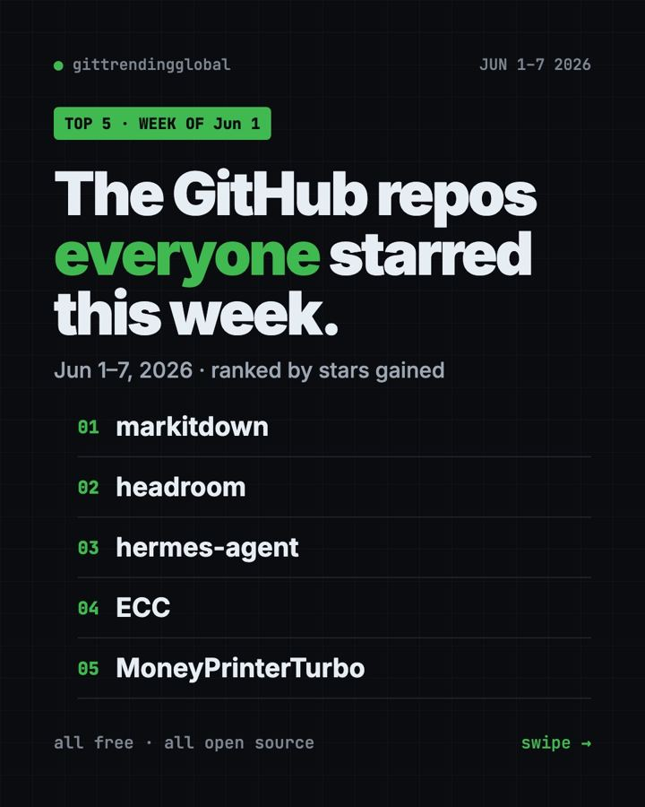
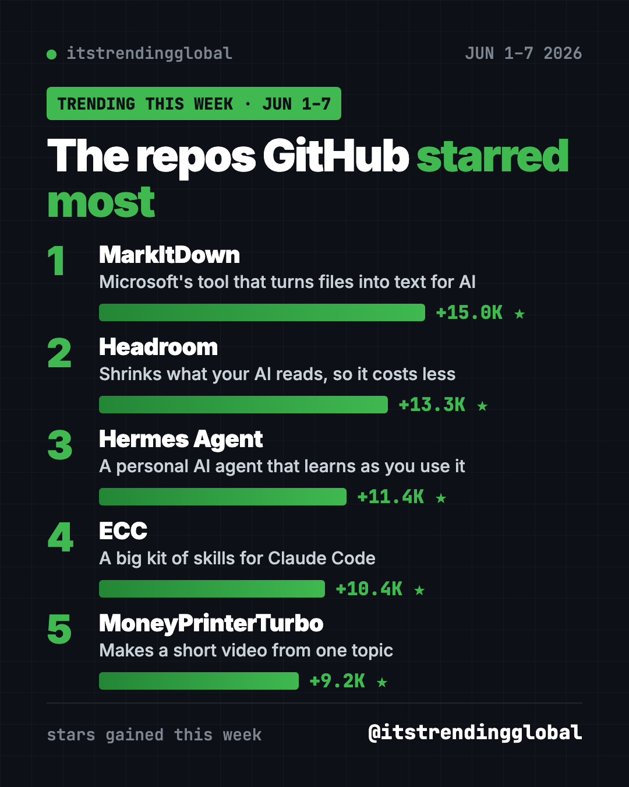
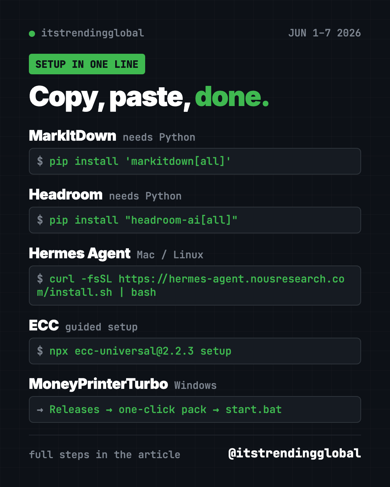

Home › Top repos › GitHub trending this week
GitHub Trending June 1-7, 2026: MarkItDown Leads
GitHub trending June 1-7, 2026: Microsoft's MarkItDown, Headroom, Hermes Agent, ECC and MoneyPrinterTurbo, explained in plain words with setup steps.

What topped GitHub trending June 1-7, 2026? Microsoft's MarkItDown, with 15,000 new stars, followed by Headroom, Hermes Agent, ECC and MoneyPrinterTurbo. All five are free and open source.
Picture a folder full of PDFs, slides and spreadsheets that you want an AI to read. That's the job this week's winner does. The rest of the list is about making AI cheaper, more personal, and better at making videos.
Key takeaways
- MarkItDown, from Microsoft, turns Word, PDF, Excel and more into plain text an AI can read.
- Headroom shrinks what your AI helper reads, so you pay for fewer tokens.
- Hermes Agent is a personal AI assistant that remembers you and learns new skills.
- ECC and MoneyPrinterTurbo stayed on the list for a second week in a row.
The week's trending repos side by side
| Repo | In one line | Who it helps | Stars this week | Runs on |
|---|---|---|---|---|
| MarkItDown | Files to AI-ready text | Anyone feeding documents to AI | +15.0K | Python 3.10+ |
| Headroom | Smaller AI bills | Claude Code and Codex users | +13.3K | Python |
| Hermes Agent | AI assistant that learns | People who want one AI for everything | +11.4K | Mac, Windows, Linux |
| ECC | Work routine for Claude Code | Daily Claude Code users | +10.4K | Node.js |
| MoneyPrinterTurbo | Topic to short video | Creators | +9.2K | Windows pack, Mac, Linux |
Stars gained are for June 1-7 only. Totals were checked on October 16, 2026.

1. MarkItDown: turn any document into text for AI
Stars: +15.0K this week · about 190.4K total
What it is: A free Python tool from Microsoft. It converts PDF, PowerPoint, Word, Excel, images, audio, HTML, ZIP files, EPubs and even YouTube links into Markdown. Markdown is plain text with simple marks for headings and lists, and AI models read it well.
Who it's for: Anyone who wants an AI to summarize or search their documents.
Everyday use: Turn a 60-page PDF report into text, then ask an AI for the five key points.
Install it. You need Python 3.10 or newer. Copy and paste this:
pip install 'markitdown[all]'
markitdown report.pdf -o report.md
Or ask your AI helper:
Install MarkItDown from github.com/microsoft/markitdown and convert every PDF in this folder to Markdown files.
⚠️ Heads up: Microsoft notes the output is made for AI tools, not for pretty documents. Keep your original file if you need the exact layout.
2. Headroom: pay less for the same AI answers
Stars: +13.3K this week · about 75.4K total
What it is: Headroom squeezes logs, files and data on your computer before your AI reads them. The project says coding helpers use about 20% fewer tokens, with the same answers. It now lives under the headroomlabs-ai account.
Who it's for: Anyone paying per use for Claude Code or Codex.
Everyday use: Wrap your AI helper once and let every session cost a little less.
Install it. Copy and paste this:
pip install "headroom-ai[all]"
headroom wrap claude
Or ask your AI helper:
Install Headroom from github.com/headroomlabs-ai/headroom, wrap Claude Code with it, and run "headroom doctor" for me.
See Headroom on GitHub · Read our full guide
3. Hermes Agent: an AI assistant that grows with you
Stars: +11.4K this week · about 254.1K total
What it is: A free AI agent from Nous Research. It remembers what you tell it, saves hard tasks as reusable skills, and can chat with you on Telegram, Discord, Slack, WhatsApp or Signal. You pick the AI model it uses.
Who it's for: People who want one helper that knows them, instead of starting fresh every chat.
Everyday use: Ask it on Telegram each morning for a summary of your day's tasks.
Install it on Mac or Linux. Copy and paste this:
curl -fsSL https://hermes-agent.nousresearch.com/install.sh | bash
hermes setup
On Windows, the README uses iex (irm https://hermes-agent.nousresearch.com/install.ps1) in PowerShell.
Or ask your AI helper:
Install Hermes Agent from github.com/NousResearch/hermes-agent, run the setup wizard with me, and connect it to Telegram.
See Hermes Agent on GitHub · Read our full guide

4. ECC: still climbing
Stars: +10.4K this week · about 280.2K total
What it is: A free plugin pack that gives Claude Code agents, skills, memory and a security scanner. We covered it last week too.
Everyday use: Get Claude Code to write tests before it says "done."
Install it. Copy and paste this:
npx ecc-universal@2.2.3 setup
Or ask your AI helper:
Install ECC from github.com/affaan-m/ECC using its guided setup and explain each option before you pick it.
See ECC on GitHub · Read our full guide
5. MoneyPrinterTurbo: short videos on autopilot
Stars: +9.2K this week · about 131.5K total
What it is: Type a topic and it writes a script, picks stock clips, and adds a voice, subtitles and music. Out comes an HD short video.
Everyday use: Make a week of short tips videos for your shop's Instagram in one sitting.
Install it. Windows users can grab the one-click pack from the latest release. On Mac or Linux, copy and paste this:
git clone https://github.com/harry0703/MoneyPrinterTurbo.git
cd MoneyPrinterTurbo
uv sync --frozen
sh webui.sh
Or ask your AI helper:
Set up MoneyPrinterTurbo from github.com/harry0703/MoneyPrinterTurbo and make a 30-second vertical video about saving money on groceries.
See MoneyPrinterTurbo on GitHub
Which one should you try first?
- Drowning in documents? Start with MarkItDown. It's one command.
- Paying too much for AI coding? Add Headroom.
- Want an assistant on your phone? Try Hermes Agent.
- Need videos fast? MoneyPrinterTurbo is your pick.
- Already in Claude Code all day? ECC gives it better habits.
💡 Tip: Claude Code (from Anthropic) and Codex (from OpenAI) are AI helpers that can run these setups for you. Paste a prompt and approve each step.
For the month as a whole, read the top GitHub repos of June 2026 and June 2026 in AI news. Next up: the week of June 8.
FAQ
What was on GitHub trending June 1-7, 2026?
MarkItDown led with about 15,000 new stars. Headroom, Hermes Agent, ECC and MoneyPrinterTurbo rounded out the top five.
Is MarkItDown free to use?
Yes. It's free and MIT licensed. Some optional add-ons connect to Azure, Microsoft's cloud, which has its own pricing.
Do I need to code to use these trending GitHub repos?
Not really. Each one has a short setup, and you can paste our prompt into Claude Code or Codex to do it for you.
Why are ECC and MoneyPrinterTurbo here two weeks in a row?
They kept gaining thousands of stars. Repeat entries usually mean a project has real fans, not just one viral day.
Want a new free tool explained every day? Follow @gittrendingglobal on Instagram.
📲 See this as a swipeable post on Instagram
Keep reading

Trending GitHub Repos October 2026: The Top 5 So Far
The trending GitHub repos of October 2026 so far: a free Photoshop-style editor, an AI art studio, a big AI model for gaming PCs and more, explained.

Trending GitHub Repos This Week, Oct 5 2026: The Top 5
Trending GitHub repos this week Oct 5 2026: Matt Pocock's skills, the openGym workout tracker, e2e testing, HyperFrames video and claude-mem memory.

GitHub Trending September 28, 2026: VoiceStudio Takes #1
GitHub trending September 28 2026: VoiceStudio, Hindsight, Paperclip, NVIDIA's OpenShell and a free 542-lesson AI course, with setup steps for each.